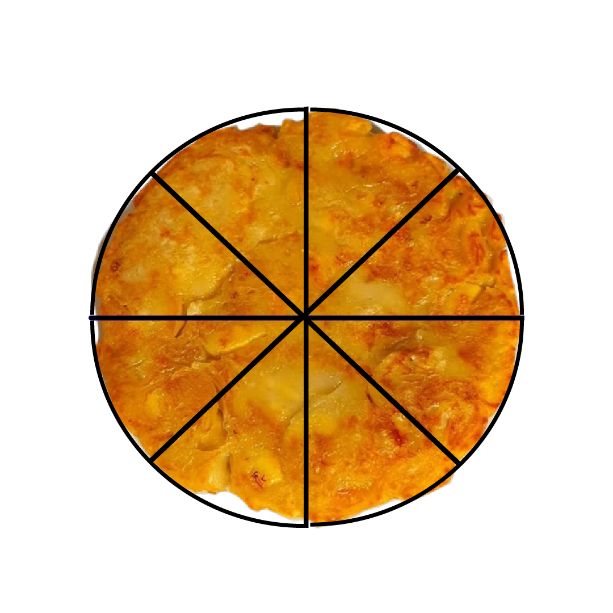
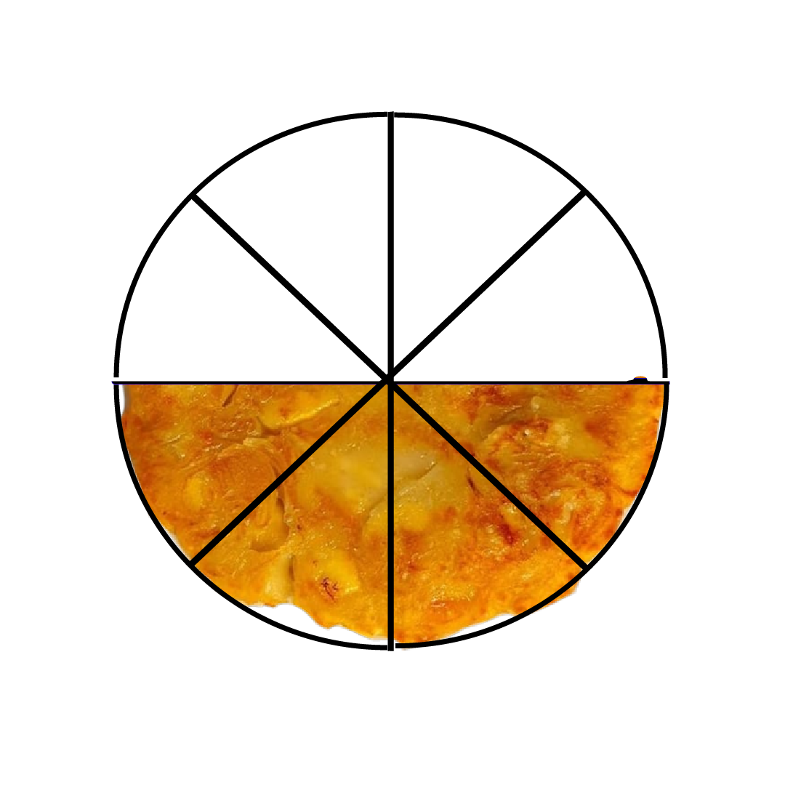
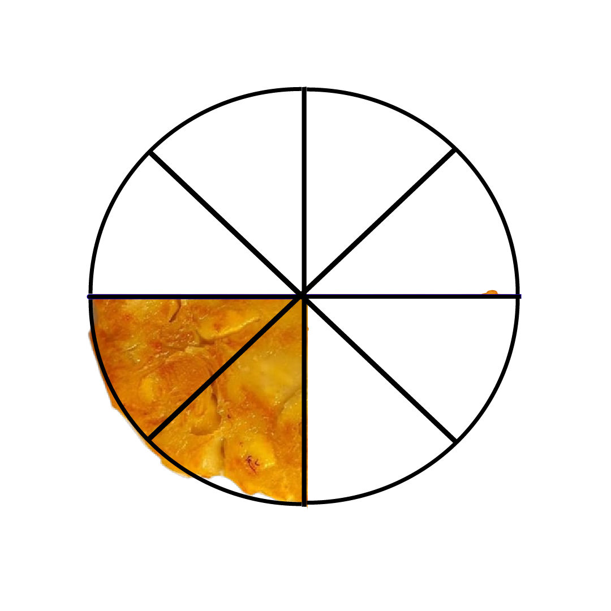

1. Peserta didik dapat menghitung pengurangan pecahan yang penyebutnya sama.
2. Peserta didik dapat mengerjakan pengurangan pecahan yang penyebutnya sama.

Ayo amati cerita di bawah ini, kemudian perhatikan cara pengurangan bilangan pecahan dari cerita tersebut !
| Pada hari minggu nissa membuat wadai lempeng di potong menjadi 8 bagian . |  | |
| Wadai lempeng tersebut di berikan kepada lia \( \frac{4}{8}\) bagian. |  | |
| Kemudian wadai lempeng tersebut juga di berikan kepada yanti\( \frac{4}{8}\)bagian. |  | |
| Berapa bagian sisa wadai lempeng tersebut? | ||